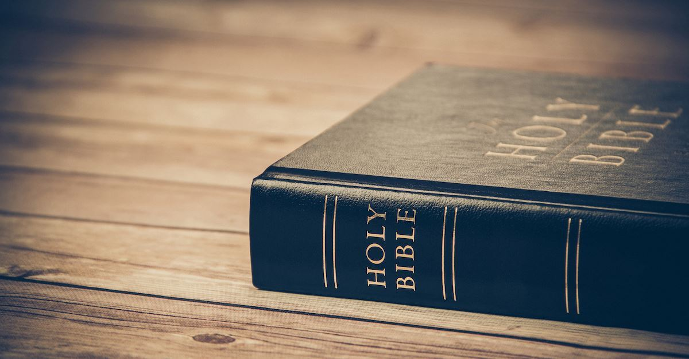
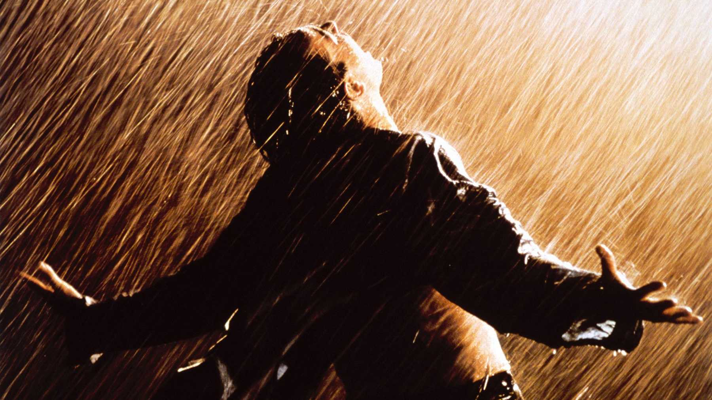
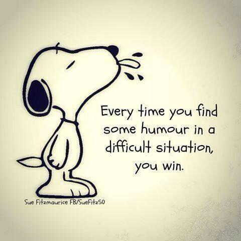

곧 우리가 만난지 일년돼어가기도 하고 너도 나도 힘든 시기를 같이 견뎌내고 있다고 생각해.
지금 내 인생이 엄청나게 행복하다고는 할수없지만 이렇게 너와 만나고 있고 하나님을 같이 알아가는것에 대해서 기쁘게 생각해.
세상이 우리를 쉽게 쉽게 살아가게 내버려 두지 않는것같지만 ... 세상을 이겨낼수 있는 힘이 우리에게는 있잖아.
 요즘 나는 또 고민이 많아 지는 시기기도 해서 항상 기뻐하지 못하는 내 마음이 참 안타깝기도하고 이기적으로 너에게 행동하는것에 대해서 미안하다가도 그세 잊어버리는 나를 어떻하면 좋을까..
나도 사실 요즘 나의 마음을 잘 모르겠어 .. 알다가도 모르겠고 희망적이다가도 절망적으로 변해.
항상 긍정적일수는 없지만 긍정적이려고 노력하기는 하지.
인간은 모순적이야 .. 갈수록 그렇다고 생각해 , 왜 항상 행복하고 긍정적일수는 없을까.
왜 나는 항상 이렇게 후회하고 잊어버리는 걸까 ,
그래도 사랑은 많은것을 덮어주지 그래서 희망을 갖고 살아가려고 노력하는것같아.
 이 각박한 삶속에서 , 음악을 하면서 많은 후회를 하고 자책도 하지만 결국에는 다시 돌아오게 되는데
이 각박한 삶속에서 , 음악을 하면서 많은 후회를 하고 자책도 하지만 결국에는 다시 돌아오게 되는데도대체 어떻게 살아가야 하는것일까 , 어떻게 해야 잘 살수 있는걸까?
이렇게 힘들게 살아가게 될줄 알았다면 내가 이런 직업을 선택 했을까?
이런 고민을 하는것 자체가 틀린것이고 해서는 안되는 것일까?
군대를 갔다 온다면 이런 고민에서 해방되어서 자유로운 삶을 살수 있는것일까?
가장 중요한것중에 하나는 후회하고 싶지 않다는 거야.
곧 끝나가는 콜번 생활을 나중에 돌아봤을때 후회하고 싶지않고,
마지막 마무리를 잘하고싶고 , 독일에 돌아가서도 이런 마음으로 끝맺음을 잘 짓는거야.
나중에 어떻게 될지모르지만,
나는 아직 음악을 사랑한다는것에 대해서 하나님께 감사드려.
그렇지 않았다면 삶이 더욱 불행해졌을꺼야.
발렌타인 데이라서 기쁜말만 쓰고 싶었는데 마음대로 되지않네,가끔은 남의 인생을 부러워하기도 하고
헛된 욕심을 부려서 허무해지는 나를 솔직하게 너에게 말해보고 싶었어.
하루하루 나이는 먹어가는데 해놓은것 하나 없다는 생각이 들어서 갑자기 우울해지기도 하고
쌓아놓은것을 하루 아침에 다 잊을수 있다는 생각에 적잖이 마음이 무겁기도 하지만,
살아야겠지 하루하루 죽어가는 나의 육체에 나의 영혼만큼은 하나님께로 올라가고싶다.
 (너무 과도한 사진이라는 생각이 든다능)
그 여정에 너도 동참해줄래?
곧 우리도 만난지 일년이 되는데 너에게 여러모로 참 많이 고맙다.
아 그리고 우리 인생에서 유머를 잃지 않도록 하자!
갈수록 그것에 대한 중요성이 느껴져 , 모든것을 잊고 다 웃고 울면서 털어낼수 있다면,
뭣이 중한가?
 어차피 우리는 죽을텐데 엄청 심각해서 어쩌겠어!
가끔은 가벼운 마음으로 힘든 마음을 훌훌 털어내고 가볍게 산책하듯이 살아보자
세상이 우리에게 무엇을 할수 있겠어?
하나님의 시선으로 의에 합당한 인생을 살도록 해보자
우리 같이 이 시련과 시험을 견뎌내 나가보자, 유머를 잃지 않으면서